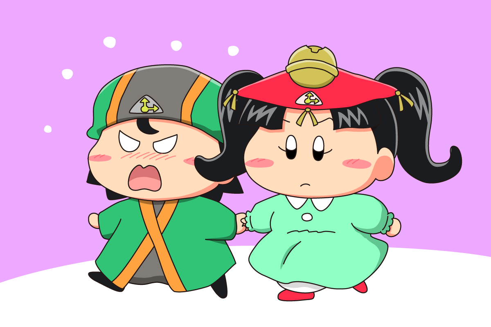
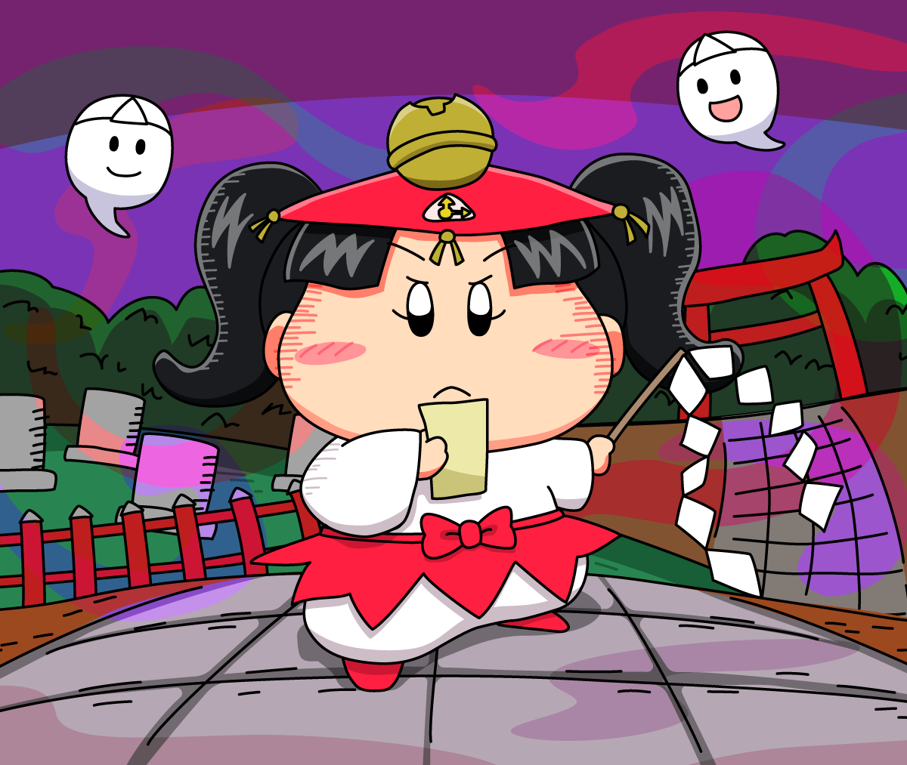

2022年の後半はなぜかコヨミちゃんばっかり描いていたので、このページにまとめたいと思います。

コヨミちゃんはしっかりしていそうで、家だと割とゴロゴロしているタイプだったりして・・。
片付けが苦手で、お母さんに怒られてばっかりなコヨミちゃんを勝手に想像してたりします。

お気楽デートのはずが、相手が普段と違う格好してきて焦るの図💦
デートするときは事前に着ていく服を事前確認することの大切さを知るチックであった・・。

『奇々怪界』の小夜ちゃん風のコヨミちゃん♪
凛々しい姿が意外と似合う！？
※『奇々怪界』とは1986年にタイトーから発売されたアクションシューティングゲームです。かわいい雰囲気の割に、難易度がとっても鬼畜なゲームだったりします・・。
コヨミちゃんはキャラデザ・性格ともに私は大好きなので、来年もまたいろいろ描きそうな予感がします。ベルルなどの他の時の妖精もお絵描きしたいなぁ。
(2022/12/28)